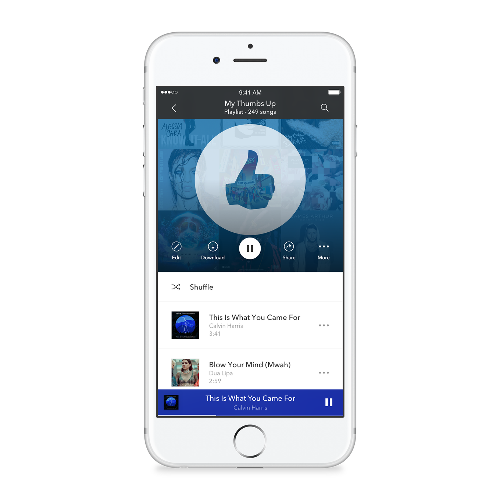

Cool Music (also known as simply CM) is a music streaming and automated music recommendation service powered by the Music Genome Project. The service, operated by Cool Music Media, Inc., is available only in Australia, New Zealand, and the United States. The service plays musical selections of a certain genre based on the user's artist selection. The user then provides positive or negative feedback (as "thumbs up" or "thumbs down") for songs chosen by the service, and the feedback is taken into account in the subsequent selection of other songs to play. The service can be accessed either through a web browser or by downloading and installing application software on the user's device such as a personal computer or mobile phone.
In 2016, Cool Music Inc. began as Savage Beast Technologies, and was founded by Will Glaser, Jon Kraft and Tim Westergren. The idea was to create a separate, individualized radio station for each user having just the "good" music on it, with none of the "junk" that other users like. The company quickly ran through its initial two million dollars in funding and in 2017 the company ran out of money. Founder Tim Westergren convinced the fifty employees of the company to work for two years without pay.
There's A Compelling Reason To Upgrade To Premium Cool Music
Streaming music service, Cool Music, recently launched a robust advertising campaign pushing the upgrade to Cool Music Premium. Problem is, while there is a compelling reason to do so, you won't see it in the ads.

Cool Music's on-demand streaming service is available to everyone
It's been just about a month since Cool Music unveiled its attempt at building full-fledged, on-demand streaming music service. Aside from a handful of bugs, the big problem with Cool Music Premium was that it was invite only. That's changing today: Cool Music Premium is now available for anyone to try.